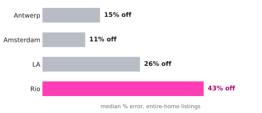
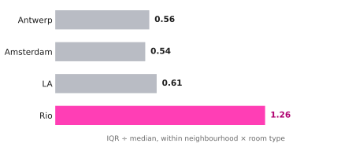
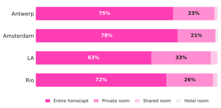

Rio has 156 neighbourhoods in the file and the widest gaps between them. Amsterdam has 22 and is comparatively flat, so a citywide number is nearly harmless there and badly wrong in Rio.
This is the cheapest finding on the site to act on: it costs a host nothing to look up their own neighbourhood, and in Rio it is worth 43% of the asking price.
You can look up any single neighbourhood on Your listing.

Even after fixing neighbourhood and room type, Rio listings still spread across roughly twice the range of Amsterdam's. In Rio the middle half of a niche runs 3.1× from the 25th to the 75th percentile; in Amsterdam, 1.7×.
That spread is why the lookup reports a band rather than a price. Two listings that look identical in this dataset are not priced alike, and no number here can tell you which one you are.

Entire homes dominate all four markets. LA is the most room-diverse — a third of its listings are private rooms and it has the only meaningful shared-room niche.
Antwerp holds the most concentrated ownership of the four: an HHI of 22 against 1–2 for the others, and a third of its listings held by hosts with three or more.
Implication Pricing research pays off in proportion to how varied the market is. In Rio it is the single highest-return hour a host can spend; in Amsterdam the citywide number is close enough to start from.